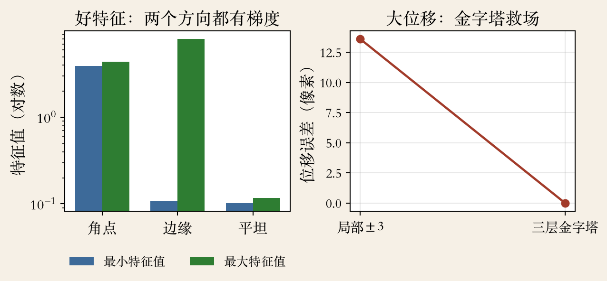
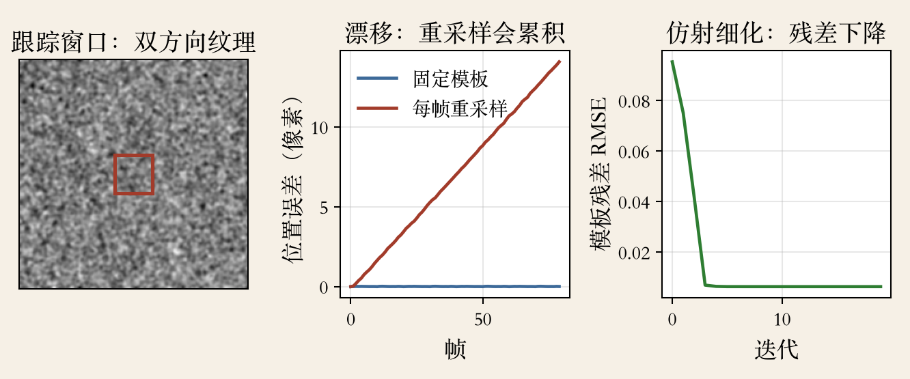
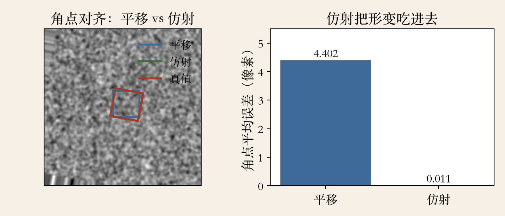

开场 · 特征跟踪
别每帧重新认人
- 上一集把整张图的运动压成一组参数。
- 这一集只关心一个点：下一帧去哪了。
- KLT：第一帧挑特征，后续帧小窗口跟踪。
- 三个问题：什么点好、怎么发现丢、为什么漂。
依据：本集导言；原书第 452 页
检测再跟踪 · 视频里的做法
先检测，再跟踪
- 也可以每帧独立检测，再匹配。
- 先在第一帧找一组特征位置。
- 再到后续图里找对应位置。
- 视频相邻帧运动小，先检测再跟踪更常用。
依据：原书第 452 页
两种做法
检测加匹配：每帧全图重复
检测再跟踪：第一帧多花力气
前提：运动小、外观别大变
好特征 · 双方向梯度
两个方向都卡住
- 两个方向都有高梯度的区域。
- 自相关矩阵两个特征值都大。
- 角点 3.92，边缘 0.107，平坦 0.117。
- 边缘最大 8.02，只在一个方向有约束。
依据：原书第 452 页；本集实验
三种块
角点：两边都卡住
边缘：一边卡住、一边能滑
平坦：哪边都能滑
看图 · 特征值与大位移
看图：特征值与大位移
- 左图：角点、边缘、平坦的两个特征值。
- 角点两个都在四左右。
- 边缘一大一小，平坦都接近零点一。
- 右图：十像素位移，局部 13.601，金字塔 0。
依据：本集实验

特征值与金字塔：三类块的特征值、大位移误差｜程序生成，未用教材或论文原图
搜索 · 平方差不够时
平方差不够时怎么办
- 后续帧找平方差低的位置，通常够用。
- 亮度变了，显式补偿或 NCC 更稳。
- 搜索范围大，用金字塔由粗到细。
- 平方差假设窗口内权重相同，外点会拉偏。
依据：原书第 452 页
三种情况
长相不变：平方差
亮度变化：增益偏置 / NCC
大位移：金字塔
模板 · 固定还是更新
固定模板，还是每帧更新
- 跟长序列：和最初模板比，还是重采样？
- 固定模板怕外观变化，比如透视缩短。
- 重采样怕特征从原位置慢慢漂走。
- 小配准误差会累积成随机游走。
依据：原书第 452 页
两种取舍
固定模板：怕变样
每帧重采样：怕将错就错
折中：隔几帧更新一次
KLT 实验 · 模板策略
漂移：错误会滚雪球
- 八十帧，每帧移动零点一五像素。
- 固定模板最终误差约零点零一七像素。
- 每帧重采样加噪声，累积到十四点零八像素。
- 估错一点，下一帧拿错样子继续找。
依据：本集实验
误差怎么滚
重采样把当前估计写进模板
估错一点，下一帧继续错
更新越勤，越要小心漂移
看图 · 跟踪三件事
看图：跟谁、怎么漂、怎么补
- 左：跟踪窗里两个方向都有纹理。
- 中：固定模板误差贴零，重采样一路涨。
- 右：仿射残差从约零点一降到零点零零六。
- 三张子图：跟谁、怎么漂、怎么补。
依据：本集实验

跟踪窗、固定模板与重采样的漂移曲线、仿射细化残差｜程序生成，未用教材或论文原图
仿射模型 · KLT 循环
平移给初值，仿射收尾
- 更好的办法：仿射运动模型对最初模板。
- Shi 和 Tomasi 先用平移模型比相邻帧。
- 平移估计当初始值，初始化仿射配准。
- 特征只在跟踪失败的区域重检。
依据：原书第 453 页
KLT 循环
预测位置
局部搜索 + 仿射细化
残差大就丢掉，稍后补点
KLT 实验 · 亮度补偿
允许整体变亮变暗
- 目标帧亮度乘一点八，加零点一五偏置。
- 原始平方差误差零点一七一像素。
- 先拟合增益偏置再比，误差零点零六一。
- 改善约二点八倍；NCC 等价于先做线性校正。
依据：本集实验；原书第 452 页
补偿怎么做
允许整体变亮变暗
每个候选拟合增益和偏置
代价是多算统计量
看图 · 仿射 KLT
六个自由度吃形变
- 蓝框只估平移，绿框仿射 KLT，红框真值。
- 只估平移，角点平均误差四点四零二像素。
- 仿射细化后零点零一一像素，几乎贴住真值。
- 旋转、缩放、透视缩短都要六个自由度解释。
依据：本集实验

角点对齐：平移、仿射、真值三组框与平均误差｜程序生成，未用教材或论文原图
大位移 · 金字塔
先粗后细，才追得上
- 大范围搜索用金字塔：低分辨率给初值。
- 十像素位移，局部正负三搜索只到边界。
- 局部搜索误差十三点六零一像素。
- 三层金字塔粗层覆盖正负十六像素，误差零。
依据：原书第 452 页；本集实验
先问位移多大
局部搜索：只在家门口找
金字塔：先粗后细
范围不够，后面再细也没用
后续工作 · 几何与学习
几何更紧，或学得更多
- Beardsley 等把特征跟踪和 SfM 结合。
- 从视频增量建稀疏三维模型。
- Kang 等把相邻网格块的角点连起来增稳。
- 还有人改虚假匹配剔除和特征选择。
依据：原书第 453–454 页
两条路
几何约束加得更紧
把长什么样学出来
学习式跟踪支持更快运动
应用 · 表演驱动动画
演员带动画一起动
- 表演驱动动画：跟踪用户动作，变形三维模型。
- 先画眼睛和嘴巴的控制线。
- 人脸跟踪器定位特征，最近邻匹配选图。
- 三角重心插值做形变，再算头部位置朝向。
依据：原书第 454–455 页
系统四步
画控制线
人脸跟踪定位特征
最近邻外观匹配选图
重心插值 + 头部姿态
工程清单 · 六个开关
六个开关，什么时候拨
- 选双方向都有梯度的点。
- 小运动局部搜索，大运动上金字塔。
- 亮度会变就补偿，或用 NCC。
- 形变大上仿射，初值仍从平移来。
依据：本集综述；原书第 452–453 页
还要会认错
残差突然变大
前后向跟踪对不上
特征跑到窗口边缘
小结 · 移交下一集
选点、跟住、纠偏
- 好特征是双方向都被约束的角点。
- 跟踪在小窗口找最像的块，漂移来自错误进模板。
- 仿射 KLT：平移给初值，六参数解释形变。
- 下一集：RAFT，网络直接学稠密光流。
依据：原书第 452–455 页；下一集预告
三件事
选点：两个方向都有梯度
跟住：局部搜索 + 金字塔
纠偏：亮度补偿 + 仿射 + 重检